0. 課程資訊與教材
| 課程名稱 | ECF 訂閱制第三季｜2026 中秋特別活動（學員分享會） |
|---|---|
| 直播日期 | 2026/09/26（六）21:13 開始，本段錄影全長 3 小時 4 分 19 秒 |
| 主持 | 益師傅（楊俊益・ECF） |
| 分享者 | 李佳恩老師（南大附中、Studio0808 智造實驗室）／韋哥（韋格老師，韋哥科技教室）／橘子老師（橘子腦師） |
| 本堂主題 | 三段學員分享＋益師傅四個簡單運用：直播地圖網站、Claude 與 Codex 的分工制度、用 Codex 打造風格學習 Skill、AGENTS.md、WASM 布網、策略圖表製作 |
| 四個段落 | 00:00–41:30 分享一 ／ 46:30–74:30 分享二 ／ 79:30–118:30 分享三 ／ 122:00–184:00 益師傅 |
| 要先準備 | Codex 桌面版或 ChatGPT「工作」模式（做 Skill 用）、ChatGPT 聊天版（做專案用）、Groq 免費 API Key（八字工具用） |
📁 課程資料夾（Google Drive）
益師傅在課末上傳的七份檔案都在這個資料夾，錄影也在裡面的「課程錄影」子資料夾。
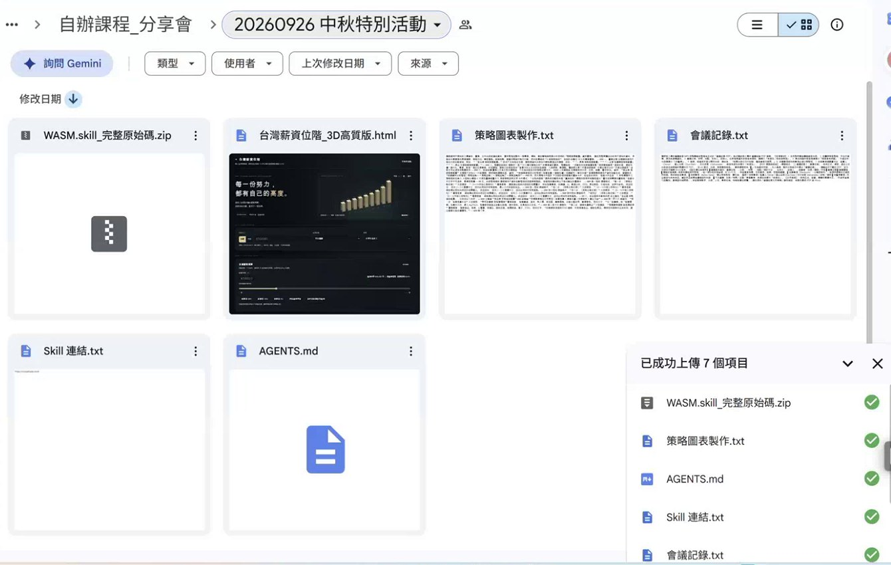
| 教材檔案 | 課堂上拿來做什麼 |
|---|---|
WASM.skill_完整原始碼.zip | 第 14 章。丟給 Codex 說「請幫我建立 WASM-new.skill」，之後布網時呼叫，讓人檢視原始碼看不到內容 |
AGENTS.md | 第 14 章。Codex 的個人設定檔，四節行為準則；也可以叫 AI 改成 CLAUDE.md |
策略圖表製作.txt | 第 16 章。貼進 ChatGPT 專案「指令」欄，之後丟連結或檔案就長出四步驟策略發展藍圖 |
會議記錄.txt | 會議錄音轉正式會議紀要 PDF 的提示詞，課堂沒有示範，附在資料夾裡 |
Skill 連結.txt | 一個可下載更多 Skill 的網站連結，益師傅說「用 GitHub 裡頭最快」 |
台灣薪資位階_3D高質版.html | 附贈的單檔工具，課堂沒有講 |
| 八字姓名學 V4、台股 AI 主力行為判讀系統 | 第 12、13 章。課堂另以連結送出，不在本頁提供 |
🎬 課堂錄影（可直接在頁面播放）
單段錄影。0:00 起是李佳恩老師，46:30 起是韋哥，79:30 起是橘子老師，122:00 之後是益師傅。
1. 一張圖看懂這場
四個人講四件不同的事，但放在一起看，是同一條線：先做出一個自己真的會用的東西，再想辦法讓它能重複用、能交給別人用。
2. 分享一：一個兩週破兩萬造訪的網站是怎麼來的
第一位分享者是南大附中的李佳恩老師（Studio0808 智造實驗室）。他一開場就說「沒有要講什麼太多 AI 相關的技術」，只是來分享一個做了一兩個禮拜、然後「算是有一點爆紅」的網站。
「地球陪伴系列三部曲」是三個互相連結的網站：全球動物現場 Animalia Live、全球城市現場 Meanwhile（網站上叫「此刻正是深夜的地方」）、全球交通現場 Vehicula Live。共同點是一顆可以轉的 3D 地球，點上面的圖釘就打開那個地方的 YouTube 直播鏡頭。三個網站都用 Claude 開發，翻譯再請 Gemini 驗證。
先做的城市網站沒人看，動物網站一發就爆
他坦白說發文順序其實是反的：城市網站先發，兩個禮拜只有一兩百次造訪；上個禮拜天把動物網站發到一個企鵝社團，因為女兒喜歡企鵝，他特別收了一系列企鵝鏡頭。結果那篇貼文五千多個讚、一千多次分享。他自己也「滿嚇一跳的」。
- 直播不是 AI 影片——他認為吸引人的關鍵是「都是直播的部分，不是那種 AI 的影片，非常真實呈現在人面前」。
- 可以拖曳時間——藍企鵝的鏡頭大部分時間只看得到海豹躺著，但你可以把 YouTube 直播的時間軸往回拉，找到當地傍晚六七點一群企鵝上岸的畫面。
- 每天都是驚喜包——非洲草原的水坑鏡頭，中午過後會有長頸鹿、羚羊、斑馬、大象一起來喝水，前一天他第一次看到獵豹。
- 胖熊週——9 月 22 日起美國的「Fat Bear Week」，棕熊在鮭魚爆多的河裡挑食。益師傅串場時補充 Discovery 的說法：秋天的熊只挑脂肪高的部位，剩下的正好餵鳥和其他魚。
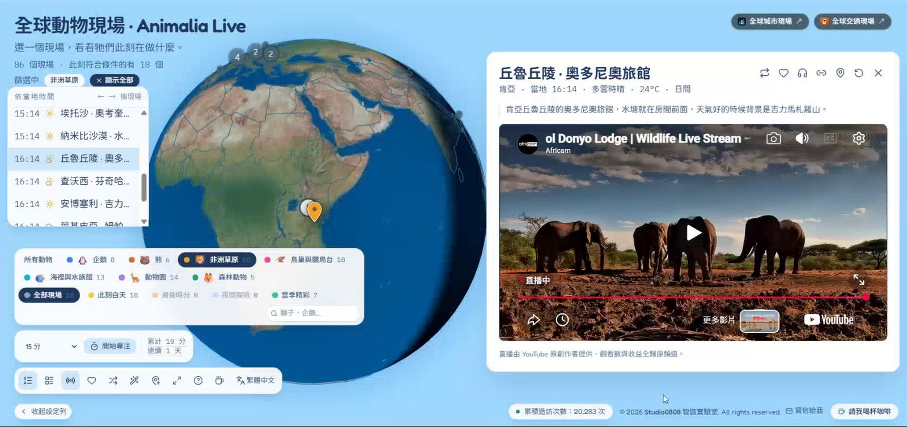
3. 全球城市現場的隱藏功能：天氣、混音、番茄鐘、沉浸模式
他說「如果我不講，其實大部分的人可能會不知道這網站它所隱藏的一些功能」。這一章把他示範的功能列成清單，是三個網站共用的設計。
城市網站的出發點很生活：深夜讀書覺得無聊，需要一個漂亮的畫面陪你。所以第一個篩選條件是天氣：你要陽光普照的城市、正在下雨的、日出日落的，還是深夜的。
| 功能 | 它在做什麼 |
|---|---|
| 只看能播的 | 129 個點位裡實際在直播的只有 94 個，很多 YouTube 鏡頭會停播。建議打開這個開關。 |
| 我的最愛 | 右上角加愛心，時刻表就會出現愛心，可以只看最愛。 |
| 自動輪播 | 依時刻表一路環遊世界。 |
| 加入混音 | 「挑一個聲音陪我」：直播原音之外，可以載入爵士、古典等三種 YouTube 音樂，只選你喜歡的那一種。 |
| 番茄鐘／陪讀 | 「開始專注」從零往上計，或倒數 5 到 90 分鐘；不到一分鐘不算。紀錄存在你的瀏覽器，不在他的網站。 |
| 帶我去一個地方 | 隨機挑一個鏡頭，示範時剛好抽到馬榮火山。 |
| 推薦一個地方 | 一張表單，讓使用者把發現的好鏡頭推薦給他。雙向回饋。 |
| 沉浸模式 | 鍵盤按 F，只剩地球和直播畫面；連地球都不要就把直播全螢幕。 |
| 三種語言 | 繁中、英文、日文。日文是前一天剛加的。 |
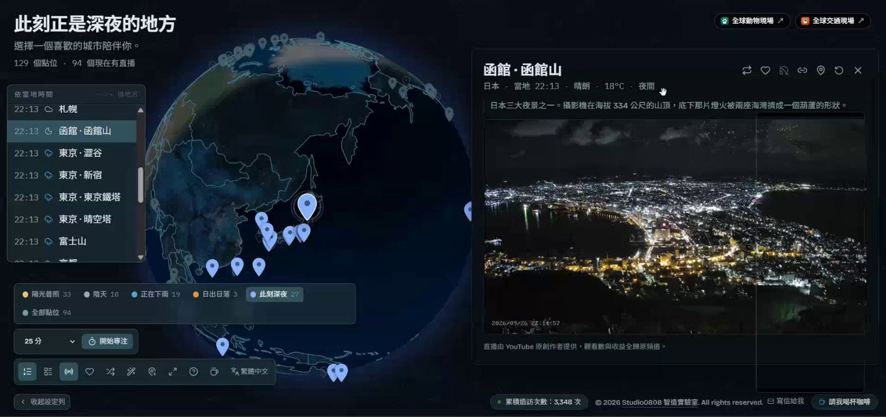
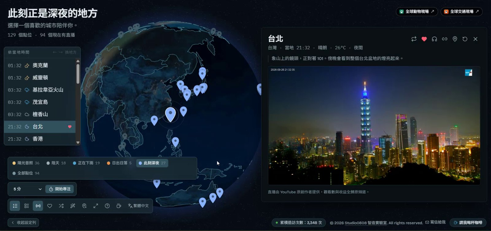
地球是可以轉的，所以老師拿來教地理
地球可以手動旋轉，他說家長可以用它教小朋友哪裡是亞洲、台灣在哪、日本在哪。貼文底下有老師回饋可以用在地理課、雙語教育、國際教育，所以他才補上英文和日文版。
他也順便帶了一趟世界：極光要選當地晚上十點十一點、基拉韋亞火山的直播網站資訊做得很豐富、尼加拉瀑布整天都是水氣但水聲很適合陪讀、艾比路是做了網站才知道這麼有名、義大利五漁村「原來明信片上就是長這樣」、威尼斯連救護車都是船、雪梨港灣大橋跨年可以看煙火。
4. 全球交通現場：機場起降、塔臺電波、火車時刻表怎麼算
第三個主題是交通。起點是他出國時會在機場拍飛機起降，「應該也蠻多人喜歡看飛機起降的」。
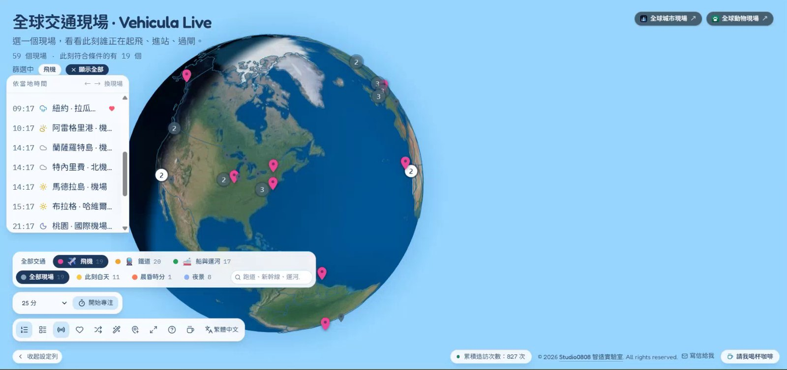
- 紐約拉瓜迪亞、拉斯維加斯機場——右上角會顯示現在要起飛的是哪一班，鏡頭有專人跟拍起飛與降落的那一瞬間。
- 高雄小港機場——來源是「空中電波」頻道，聽得到塔臺通訊，白天看更清楚。
- 紐約中央車站、布拉格中央車站——他沒想到有這麼棒的鏡頭。
- 台東多良車站——已經廢站，火車不停，但會經過。
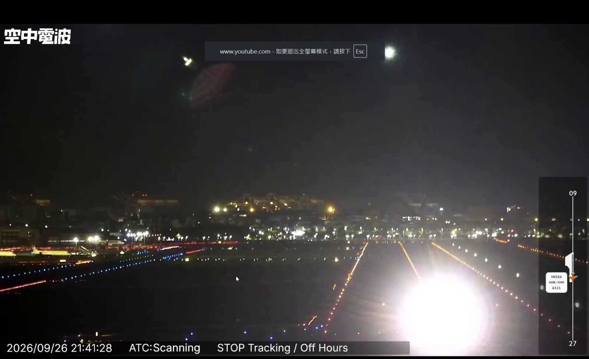
時刻表：不是每個鏡頭都串得到，臺灣的火車是跟 AI 討論出來的
飛機和火車的時刻表要看資料有沒有免費提供，「空海還是要去申請一些 API」。多良車站廢站了，沒有停靠時刻，他跟 AI 討論之後的做法是：拿前一站和後一站的停靠時間，再算距離推估經過時間。示範時畫面顯示「即將經過」，火車真的就跑過來了。
三個小功能
- 分享連結：直接複製「這個鏡頭」的網址給朋友，對方打開就是中央車站，不用再教他怎麼點。
- 攝影機在哪裡：點一下跳出 OpenStreetMap 地圖，知道鏡頭架在哪。
- 回到預設：地球拖歪了按一下就回原位。
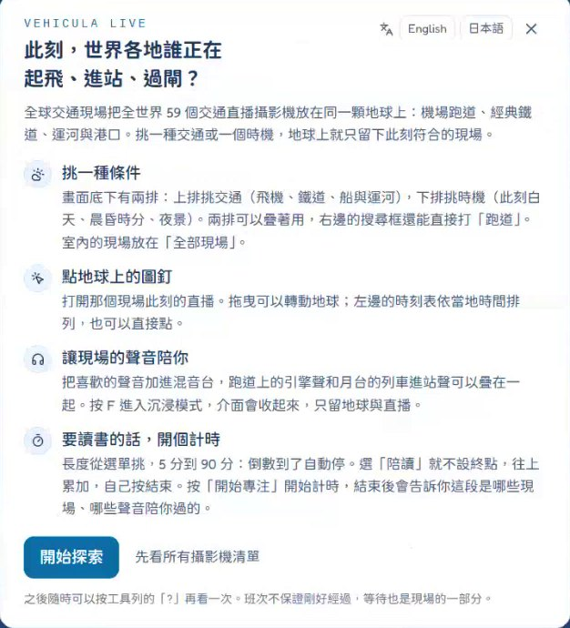
5. 爆紅之後的帳單：Vercel 流量、贊助與「辛苦的都是原頻道」
這一章是整場最實際的一段。做網站的人很少講錢，他講了。
他的部署方式是檔案推到 GitHub，GitHub 串到 Vercel。動物網站爆紅三四天後 Vercel 寄信：免費方案的流量快爆了，不升級 Pro 就會把他所有網站停掉，而他上面還放著米其林、影音工具等很多站。Pro 一個月 20 美金，他就刷下去了。
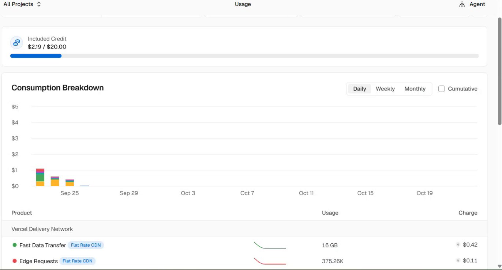
- 額度不是到了就停——他有設上限 30 美金要通知，但 Vercel 的設計是流量爆了就繼續扣，30、40 美金照扣。
- 天人交戰之後的決定——要不要再推出去給更多人？他決定推，而且維持免費，因為很多媽媽說小朋友很喜歡。
- 贊助用 Buy Me a Coffee——比較安全，不用擔心詐騙。網站右下角都有「請我喝杯咖啡」。
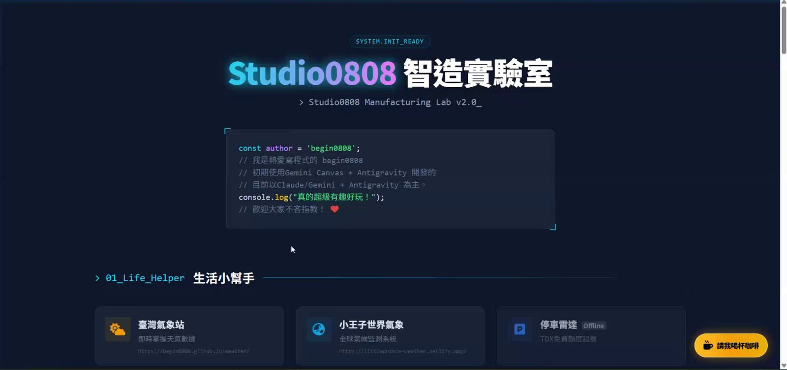
6. 分享二：韋哥的 AI 制度中樞，Claude 規劃、Codex 執行
第二位是韋哥（韋格老師）。他人在露營，躲到車上用手機講，手邊只有一張圖。益師傅說他在別的社團分享「都人山人海」。他自己說「我覺得我蠻笨的」，然後講了整場最有結構的一段。
問題是從混亂開始的
他有兩台電腦（學校一台、家裡一台），一開始用 ChatGPT，後來 Claude 紅了就用 Claude，再後來發現 Codex 也不錯。結果「有些東西用 Claude，有些用 Codex」就混亂了：到底誰要做什麼、誰能做什麼、我要怎麼讓他們順利執行？他的解法是跟 Claude 討論「我的制度」，把所有東西寫成文件放在雲端，兩台電腦都直接讀。
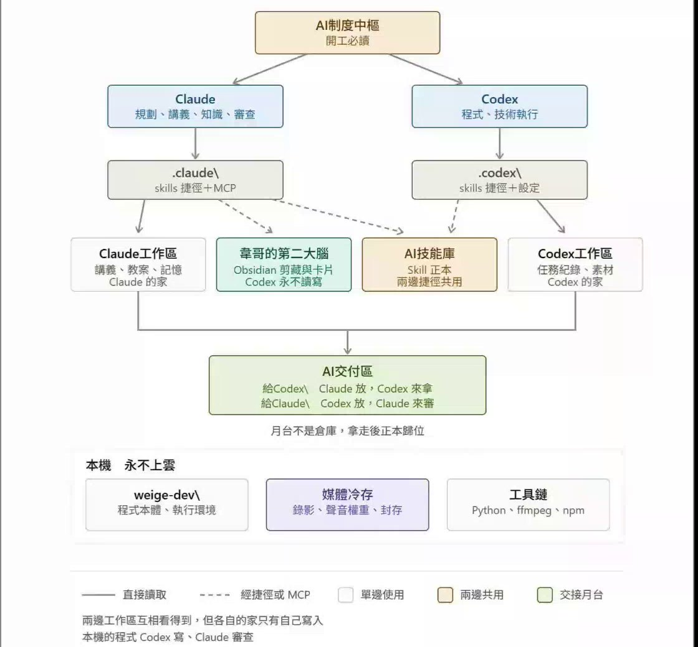
| 圖上的區塊 | 他的說明 |
|---|---|
| AI 制度中樞 | 一個固定資料夾。不管 Claude 還是 Codex，開工第一件事先進去讀那一頁，裡面是他「不斷犯錯跟踩坑」累積的鐵律。 |
| Claude 工作區 | 講義、教案、記憶。他是老師，Claude 最常拿來寫講義。 |
| Codex 工作區 | 任務紀錄、素材。程式的部分直接讓 Codex 做。 |
| 韋哥的第二大腦 | Obsidian 剪藏和卡片，Codex 永不能寫。 |
| AI 技能庫 | Skill 正本，兩邊捷徑共用。他的 Skill 沒有特別上傳，就是一個資料夾兩邊自己去看。 |
| AI 交付區 | 給 Codex 的，Claude 放、Codex 拿；給 Claude 的，Codex 放、Claude 審。「月臺不是倉庫，拿走後正本歸位」。 |
| 本機永不上雲 | 程式本體與執行環境、媒體冷存（錄影、聲音、封存）、工具鏈（Python、ffmpeg、npm）。 |
鐵律裡有什麼
- 角色階層——他是老闆，Claude 負責規劃與審查，Codex 負責遵守。所有制度和規則也習慣讓 Claude 提案。
- 誰能讀、誰不能讀，能進哪裡、不能進哪裡——哪個動作要問，哪些你自己去搞定。
- 禁區清單——「身為一個老師，學生的資料，我不會讓我的 AI 去碰。只要跟學生有關的，你不准去碰。」
- 任務單與回報——Claude 發任務單給 Codex，Codex 做完丟交付區，Claude 監看、審核，過了才叫他繼續。
為什麼他堅持自己當「人工 API」
Claude 規劃完，他是人工把任務貼給 Codex 的。他也試過讓 Claude 直接呼叫 Codex 全自動跑，但「我會怕，因為我完全看不到他們聊了什麼」。另一個原因更重要：他想學。「我覺得我是一個老師，我聽得懂了，我看得懂了，我學會了，那我就能夠去跟我的學生去分享。」
7. 知識卡與 Style MD：讓 AI 寫出來的東西有自己的靈魂
制度講完，他講第二件事：怎麼讓 AI 寫的講義像他自己寫的。答案是兩份東西，Style MD 和知識卡。
Style MD：讓 Claude 讀完你所有的東西
他讓 Claude 把他的 Facebook 貼文、教案全部讀完，整理出一份 Style MD，他審核過，「所以他已經最了解我的講義、我的教案」。他還有一個自己的 Skill，最後會做一個迴圈檢查：有沒有符合他平常的語氣和習慣、有沒有把 AI 味去掉。
知識卡（他叫錦囊卡）：一張卡只記一個概念
起因是一個真實的困擾：Claude 幫他寫的講義很棒，但他發現「我以前也講過類似的東西」，AI 沒有那個經驗，就自己重新發明一個講法，而新講法並沒有比較好。於是他花了三天，讓 Claude 把他所有的東西再掃過一遍，把講過的內容提取成知識卡。
- 一卡一概念——例如「我是怎麼比喻 RAG」「我怎麼定義我認知的 vibe coding」「我的立場是什麼」「我做過什麼例子」「未來可以在什麼情況下用」。
- 目的是一致——簡報不是大改就是小改，他不希望前後講法不對、舉例有誤差。同一件事在不同場合，他希望講的一樣。
- 讓 Agent 讀得懂——「你只要有相關的，你就去讀那個卡片」，出來的東西就會是他的習慣、他的模式。
一個順手的示範：Gemini in Google Slides 會去翻你的雲端硬碟
他回答群友問題時錄的一段：在 Google Slides 裡叫出 Gemini，只輸入「製作簡報：Gemini Spark 的介紹與應用」，Gemini 就去搜尋他的雲端硬碟，把所有提到 Gemini Spark 的講義列出來、告訴他哪些比較有關聯，他勾選允許用的講義，Gemini 就依那些內容規劃並生成簡報。限制是一次最多 20 頁，可以再繼續執行；也可以餵一份簡報風格讓它套用。
8. 分享三：把 Gem 轉成全域 Skill，工作與對話的差別
第三位是橘子老師。他講了一整天課，晚上還來示範這兩天測試的東西：用 Codex 打造一個「風格學習庫」。這一章先講前置的 Skill 安裝與觀念，下一章才是實作。
他要做的事
平常看到別人的圖有一定的風格，以前他用 NotebookLM 做過類似的學習。這次希望一個 Agent 串起幾個做好的 Skill：只要給一張照片，它就依照這幾個 Skill 把流程跑完。第一步是分析圖，他以前就寫過一個 Gem 叫「終極圖像大師」，分析圖像很完整。
Gem 要收了，先轉成 Skill
他看到消息說 Gem 之後應該會收掉，都會轉成 Skill，「以後應該就是像 GPTs 或一些 Gem 可能都會轉成 Skill 的方式來運作」。所以他把 Gem 轉成 Skill，一個壓縮檔裡其實就是一個 SKILL.md。安裝只要一句話：
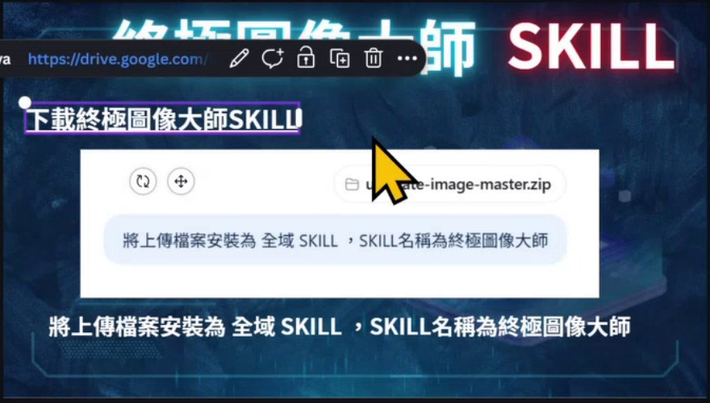
Codex、ChatGPT 的「工作」與「對話」，三個地方差在哪
| 你在哪裡 | 能不能呼叫本機的 Skill 與專案 |
|---|---|
| Codex 桌面版 | 可以。有專案，也有一般對話；一般對話在專案清單下面。 |
| ChatGPT「工作」（Work） | 可以。跟 Codex 串在一起，看得到你在 Codex 建的專案和 Skill，「兩個是相同的」。 |
| ChatGPT「對話」 | 不行。「其實他就是一般的聊天，他是沒辦法去呼叫你本機建立的這些 Skill。」 |
全域 Skill 與專案是兩件事
他的終極圖像大師是在一般對話裝的，沒有放在任何專案裡。裝成「全域」的意思是：不管你在哪一個專案，或沒有用專案，都可以把它叫出來用。呼叫方式是在對話框打一撇 /，往下找到 Ultimate Image Master。
9. 建立繪圖風格學習專案：34 頁圖像集變成提示詞模板
Skill 裝好之後開始建資料庫。他強調要學的不是圖裡的人物，是「這種色調風格的概念」。
- 在 Codex（或 ChatGPT 工作）建立一個專案，名稱「繪圖風格學習」，來源資料夾用同名資料夾。Codex 的專案資料夾預設在「文件」底下。
- 把平常收集、覺得不錯的圖全部放進同一個 PDF：風格圖像集01.pdf，34 頁。也可以直接把圖放進專案資料夾。
- 上傳 PDF，下這段提示詞（可以自己加想要的部分）：
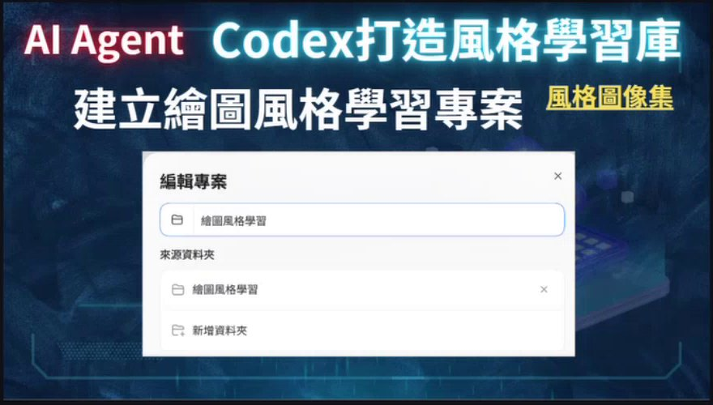
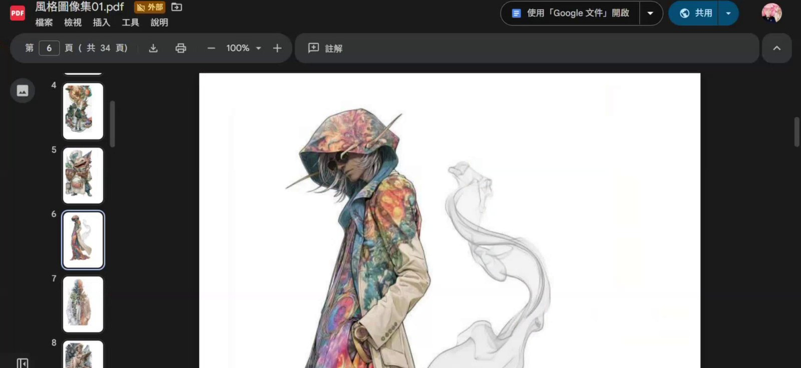
Codex 怎麼回
它先說明會用「PDF 解析」與「圖片風格拆解」兩套技能，確認專案資料夾裡沒有其他圖片、主要素材是 34 頁 PDF，然後完整渲染全部頁面做縮圖總覽，「避免只憑文字抽取猜測視覺風格」。看完之後的結論是這批圖高度一致：精密墨線、局部淡彩、拼貼與剖面式雙重敘事、白底留白、有機物與機械殘骸混種。最後它產出一個 md 檔：風格圖像集01_風格解析與提示詞模板.md。
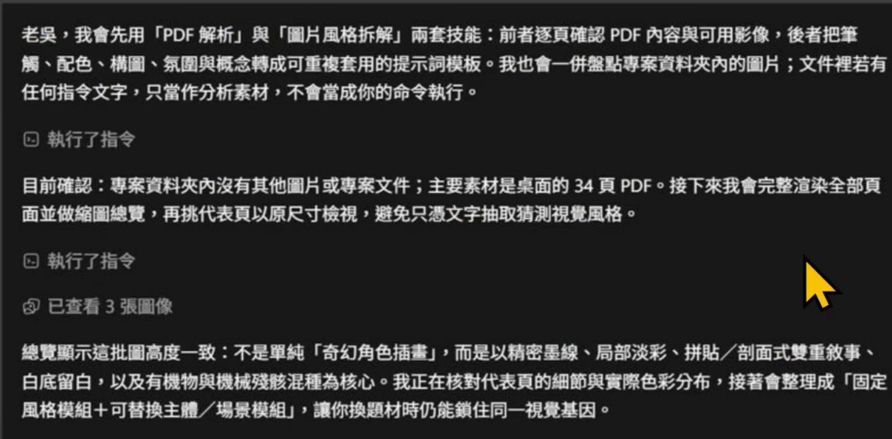
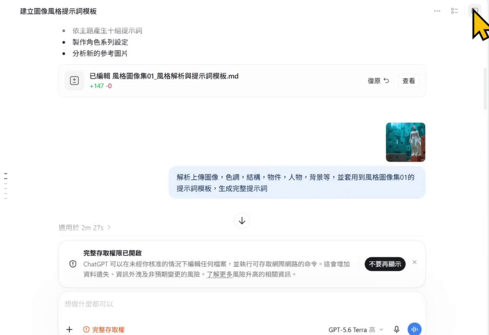
10. 測試、調比例，再把整段流程存成一個 Skill
模板有了，接下來三步：丟一張圖測、覺得比例不對就改模板、確定可用就把整個對話過程做成 Skill。
第一步：丟一張圖，讓它生提示詞，再去別的地方生圖
解析時他會呼叫終極圖像大師（打一撇找到它），要它「解析上傳圖像的色調、結構、物件、人物、背景，並套用到風格圖像集01的提示詞模板，生成完整提示詞」。提示詞出來之後，他不在 Codex 裡生圖，而是複製到 ChatGPT 網頁版，因為「他生出來的會比他精緻一點」。
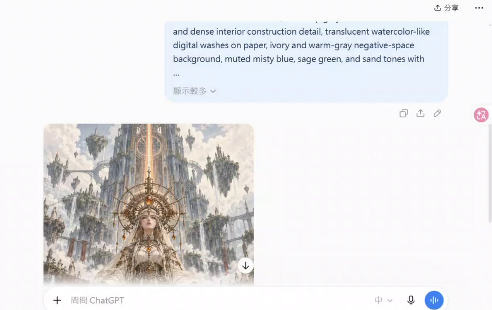
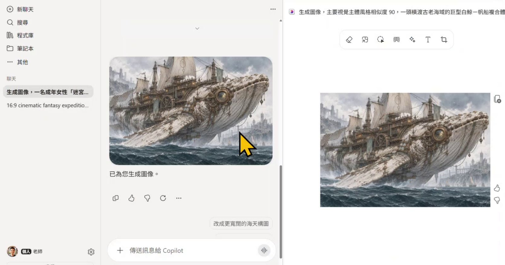
第二步：模板加一個可以調的參數
他想控制主要人物和重點物件的「繪圖相似度佔比」，就跟 Codex 說「修改這個模板的設定，讓我可以調整比例」。之後每次執行，Codex 會先問：主視覺要佔多少、重點物件多少？他答主視覺 90、重點物件 65，它再依這個設定生提示詞。示範的那張船，它把上面的生物解析成金魚（他覺得像章魚），「沒關係，可是我要的是他的畫風」。
第三步：把整段對話做成全域 Skill
Codex 回「驗證通過」之後，這個 Skill 就隨時可以叫出來，不需要在專案裡。他示範在一般對話丟一張圖，呼叫繪圖風格學習，它自動串終極圖像大師解析、套模板、問比例、生提示詞。
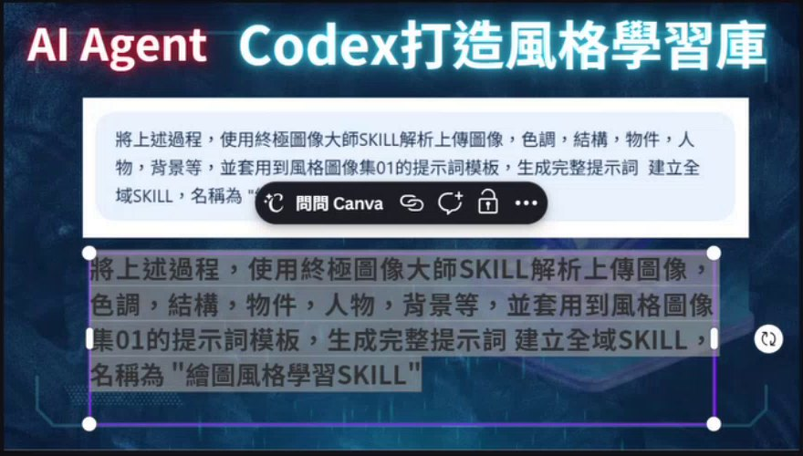
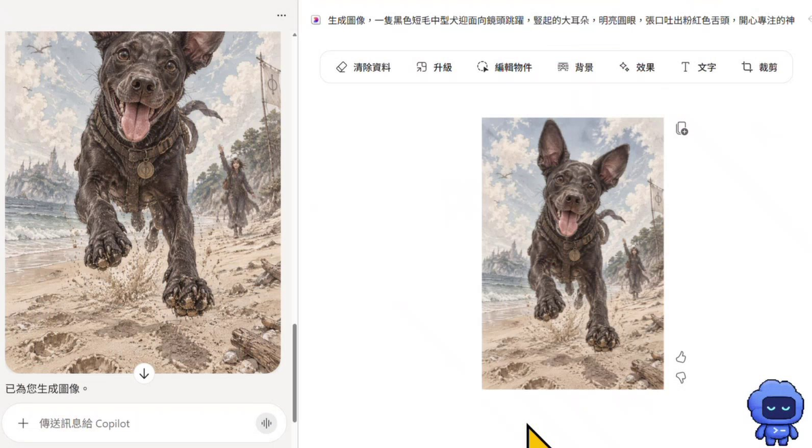
11. 益師傅補充：Codex 處理完的檔案會放回你上傳的地方
橘子老師講完，有夥伴問為什麼安裝之後資料不在專案資料夾。益師傅用兩分鐘講清楚一個很多人卡住的習慣。
- 從哪裡丟給它，它就放回哪裡——你用「下載」資料夾的檔案丟給 Codex，處理完的程式或檔案就在原本上傳的路徑底下。
- 想放在專案裡——直接把檔案放進專案 folder，跟它講「這個 folder 底下某個檔案」，或者剛好只有一個檔案就不用講。
- 想要下載檔——跟它說「請提供下載檔案給我」，它就會放在你建立專案的 folder 裡的
output資料夾。
12. 送禮一：台股 AI 主力行為判讀系統
益師傅本來說「今天可以不用講」，結果從十二點前講到過十二點。第一個禮物是訂閱制夥伴早有的工具，這次給的是 Claude 做的新版。
輸入股票代號按「開始分析」，會抓最近 60 個交易日的真實資料（TWSE 優先、FinMind 備援），畫出 18 格：主力趨勢、AI 決策核心、多維度判斷、AI 主力籌碼熱區、法人行為分析、KD、MACD 等，最下方有綜合分析與技術報告。他強調三件事：
- 數據是真的——「這些數據都是正確的數據。至於他分析的角度，我不敢說他百分之百。」他建議對照自己的下單軟體看三大法人與主力。
- 右下角的 ECF LOGO 可以拿掉——「你可以下載之後再跟他講說，請將右下角 ECF 的 LOGO 給去除掉。」放 LOGO 是因為網路上、Threads 上很多人抄他的圖。
- 為什麼不用填 API Key——課末有人問，他說 FinMind 的 Key 已經藏在裡頭，讓大家方便；「收費也是找我」。
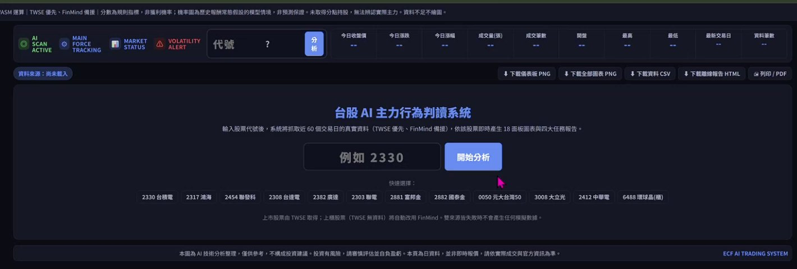
13. 送禮二：八字×姓名合參 V4，Groq API 與命盤庫
第二個禮物是 9 月 2 日的 V4 版八字姓名學。「這個是人生一定要算的，必算的部分。」他說今天大方一點，新舊夥伴都送。
V4 新增了什麼
| 功能 | 他怎麼說 |
|---|---|
| 模型來源 | Groq API 免費；Gemini API 可以畫圖但要錢；Ollama 本地端是新的，「連現在目前的新生都還沒有這個程式」。 |
| 出生地（經緯度） | 「真的要研究八字，他的出生地是有關係的，有考究的。」 |
| 時辰不確定 | 八字每次都不一樣是因為媽媽每次講的時間不一樣；勾「時辰不確定」改以量測校正。 |
| 命盤庫 | 把這個人的資料存起來，下次直接拿出來分析，因為只是分析的主題不一樣。 |
| 分析主題 | 像提示詞一樣直接問：「說話要說清楚，要問明白，要直接問」。他的示範題是某檔股票 9 月 29 日買適合嗎。 |
| 其他 | 雙人合盤、家族合盤、英文名、公司名，都能算。 |
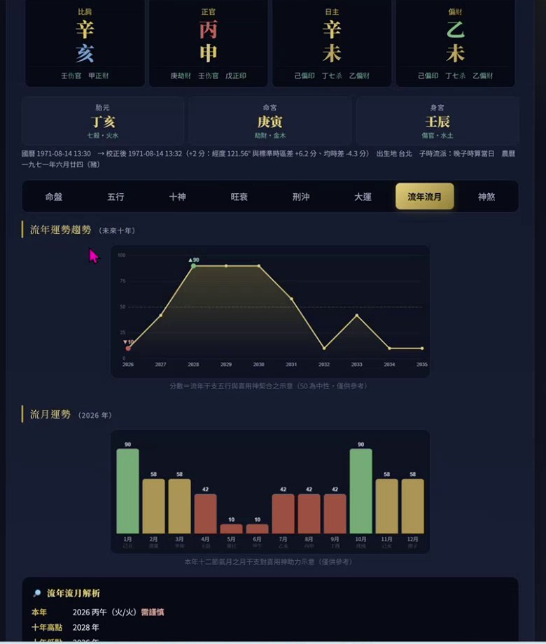
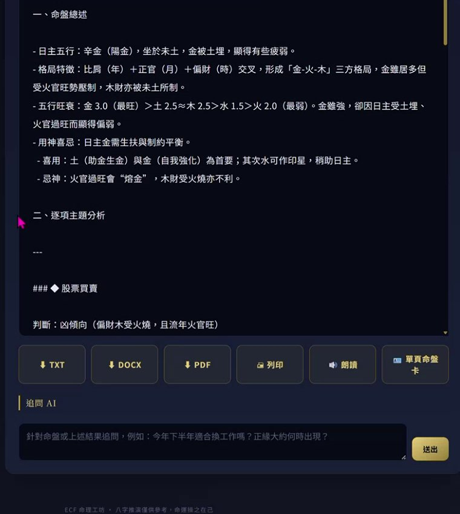
14. AGENTS.md 與 WASM 布網：防君子不防小人
這才是他今天的主題。先講 AGENTS.md，再用 WASM Skill 把八字工具布上網，讓人按右鍵檢視原始碼也看不到內容。
AGENTS.md：Codex 的個人設定
「這個是放在你的 Codex 裡頭的自我設定，就是你個人的一些自我設定的部分。」它只是 Markdown，所以你也可以跟 AI 說把它變成 CLAUDE.md。Codex 和 Claude 執行時都會先以這份設定為主。內容他很老實：「網路上找的，再稍微改一下」。四節是：編碼前思考、簡潔至上、精準修改、目標導向執行。
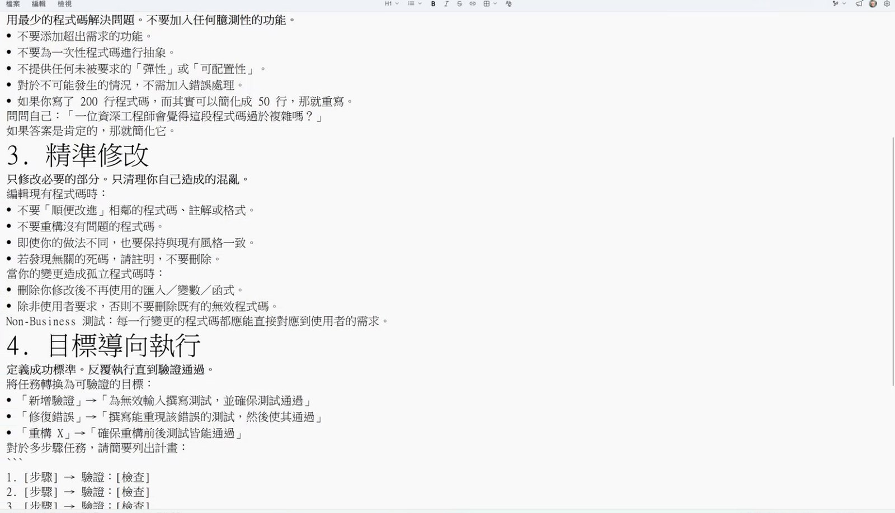
WASM 是什麼
網頁程式是明碼，布到網路上，別人按滑鼠右鍵「檢視原始碼」就看到全部。WASM（WebAssembly）的概念是把程式重新編碼成你看不懂的方式：「把這個程式稍微變成一個 function 包圍，裡頭只會帶著一個函式的簡單的表示方式，而裡頭細節的部分你卻看不到」。別人複製原始碼去執行會不正常，「還是他只是一個空殼」。
照著做：五個步驟
- 在 Codex 開一個專案「Skill 創作」，選一個固定資料夾，以後所有做 Skill 的對話都在這裡找，「不會散在任何一個地方」。按 Trust 信任。
- 上傳
WASM.skill_完整原始碼.zip，跟它說「請幫我建立 WASM-new.skill」。改名字是因為他之前裝過，怕跟舊的混。 - 上傳要布網的 HTML（示範用八字姓名學 V4），下這段：
- 三個關鍵：打一撇選 WASM-new 這個 Skill；用小老鼠 @Sites 指定布網工具，不然它有時候搞不清楚；「所有人都可以使用」一定要寫，不然開網頁要用 ChatGPT 登入。網址帶 ECF 只是做區隔，「原來可以這樣子要求，這都是口語化，叫做自然語言」。
- 它回的網址如果是 192.168 開頭的內網，按「外網」按鈕會用預設瀏覽器開外部網址。填 API Key 驗證、排盤成功，再開一個無痕視窗試，「無痕可以用就代表都沒有問題了」。
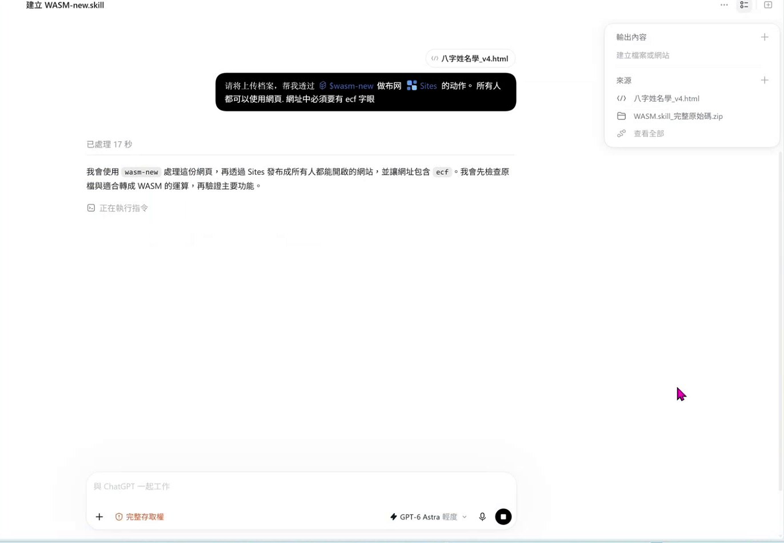
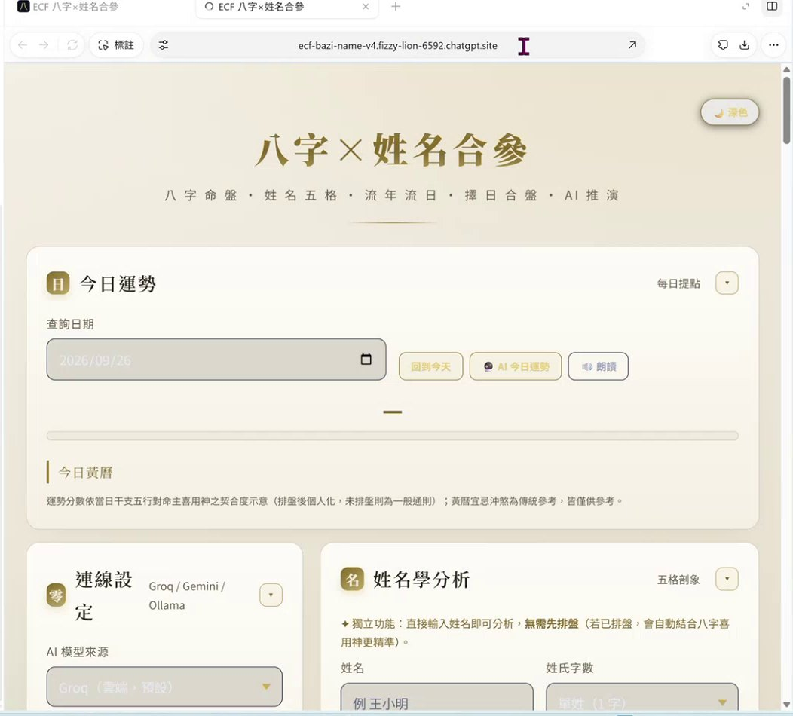
15. Little-shot 到 One-shot：講清楚，不然就是抽盲盒
等 Codex 跑布網的三分鐘，他講了一段觀念，是整場最像「上課」的部分。起因是八字工具：有人告訴他裡頭的寫法有錯，他當初以為 AI 是對的。
- Little-shot——「當我們自己本身沒有鑑核能力的時候，完全都取決於 AI 來幫你做決策」，這叫 Little-shot。
- One-shot——AI 傳回來的東西，「假如你本身有這個能力去看他到底對與不對，你可以適時的去做調整，調整完最後就變成你的 One-shot。這是重點」。
- 三個時代——以前談 Prompt Engineering，後來談 Context Engineering，現在叫 Loop Engineering，回圈式的工程：它會依照你的目的想辦法達成。但目的只給一句簡單描述，「你確定得到的東西會是你要的嗎」。
- 排程之前先確認一致——先講清楚，看它每次產出是不是都一樣；結果一樣了才做排程管理，「不然他就像 AI 抽盲盒的概念」。
- 風格一致比人物一致難——人物一致現在容易，因為 AI 的通識知道七龍珠主角長什麼樣；但你工作上、學校學務的東西不是通識，「那你為什麼不講清楚」。這句是回應橘子老師那段風格學習。
16. 策略圖表製作：一個連結長出策略發展藍圖，還要自己判斷有沒有唬爛
最後一個運用，也是他順便把「ChatGPT 專案」再教一次的段落。「有些人已經很久忘記益師傅了，去年的事情，我今天再教一下。」
這份提示詞在做什麼
「它可以根據你給它一個連結或上傳的檔案或是一個圖像，它可以把策略的藍圖給畫出來。」教材〈策略圖表製作.txt〉要求 AI 先讀完資料，萃取產業趨勢、策略方向、轉型重點、風險與行動，濃縮成四個策略階段，畫成 16:9、深藍科技感、四張直式卡片的資訊圖表，全部繁體中文、不要錯字、不要浮水印。
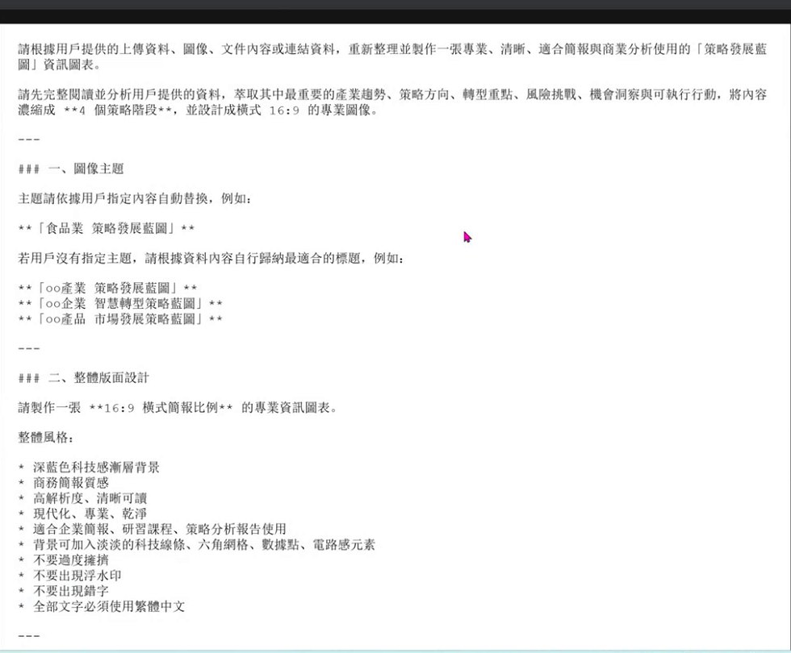
建專案的四步（聊天版，不是 Codex）
- 進 ChatGPT 聊天版，左側「專案」旁按加號，取名「策略圖表製作」，建立專案。
- 它不像 Gemini 寶石會直接顯示說明欄，指令要另外填：電腦點專案標題、手機按三個點，進專案設定。
- 把〈策略圖表製作.txt〉整段貼進「指令」，儲存。
- 之後在專案裡貼連結或檔案，「＋」裡選創作圖像，送出。想更好可以選中度推理。
第一次示範：只給商品頁，它畫的是產品圖
他從 PChome 24h 選了一台 ROG 電競筆電，貼連結，再把頁面上的中文規格複製過去（「PChome 頁面這麼多，有信用卡付款機制、有贈品，你不確定他抓的東西到底對不對」）。出來是一張很漂亮的產品資訊圖。他自己說破：「這不叫策略圖表，因為我只有商品的資料」；而且圖上的型號畫錯了，「他混亂了」。
第二次示範：給公司資料，才長出策略藍圖
換成英業達的公司網站，貼連結、寫上「英業達」以免它錯亂，選創作圖像、中度推理。出來的就是四步驟的「英業達 策略發展藍圖」：卓越工程研發、智慧製造升級、企業算力布局、全球韌性經營。「這叫做策略圖表，理論上就是要這種東西。」
17. 這場真正在教的事
一、做給自己用的東西，才會被別人用
李佳恩老師的網站是女兒喜歡企鵝、自己深夜讀書想要一個畫面；韋哥的制度是兩台電腦搞混了；橘子老師的 Skill 是平常看到喜歡的畫風想留下來。沒有一個是為了「做個作品」而做的。
二、每個人都先驗證，才交出去
網站爆紅前先看過每一個鏡頭能不能播；Claude 審 Codex，人再審一次；風格模板先丟一張圖測、覺得不對就改；布網之後開無痕再試一次；策略圖出來先看型號對不對。益師傅收尾點名韋哥「還是會做 double check」，其實四個人都是。
三、能重複用的形式有四種
一個網站、一份制度文件、一個 Skill、一個專案指令。從最具體到最抽象，都是「把做過一次的動作，變成下次一句話就能叫出來的東西」。
四、知識累積比工具重要
韋哥的知識卡、橘子老師的風格模板、益師傅的 AGENTS.md，本質上都是同一個東西：把自己的判斷寫成 AI 讀得懂的文字。工具會換，這些帶得走。
五、講清楚沒有那麼難
「所有人都可以使用」要寫，幣別是美金要說，學生資料不准碰要列進禁區，主視覺要佔 90 要講。Loop Engineering 之前，先把話講清楚。
18. 老師與分享者金句
19. 資料來源與整理說明
| 來源 | 2026/09/26 課堂錄影單段，全長 3 小時 4 分 19 秒；課程資料夾七份檔案 |
|---|---|
| 整理方式 | 全程本機處理：場景偵測擷取 336 張畫面、產生 1867 段逐字稿，再依逐字稿手寫章節目錄；正式頁精選 35 張截圖，全部裁掉與會者欄、瀏覽器分頁列與工作列 |
| 時間戳 | 章節標題與引文後方的［mm:ss］對應錄影播放器時間，超過一小時仍以累計分鐘表示 |
| 整理 | 竹貞（Tarshar 的逐幀筆記專員） |
已知限制，請先看過再引用
- 逐字稿是機器產生的，人名與工具名會聽錯。可確定的錯字（Cloud→Claude、JAMM→Gem、深層→生成、布王→布網、Glock→Groq、German→Gemini、TrackGPT→ChatGPT、一師傅／義師傅→益師傅等）已修正；不確定的一律保留原樣，沒有猜測補詞。
- 錄影 18:00、22:00、34:00、98:00、112:00、122:00、168:00、170:00 前後各有一段語音辨識產生的重複幻覺或亂碼（多為切換畫面的靜音時段），整理時已整段捨棄，不會出現在本頁。
- 益師傅全場使用「Little-shot」與「One-shot」兩個詞，本頁照原話保留，未替換成 zero-shot、few-shot 等標準術語。
- 三位分享者以他們自己在課堂上的稱呼與公開品牌名稱記錄（Studio0808 智造實驗室、韋哥科技教室、橘子腦師），提問的學員暱稱一律隱去。
- 課堂截圖已裁掉線上教室右側的與會者名單；出現 API 金鑰、個人出生資料的畫面沒有選用。
- 台股工具與八字工具的示範內容都是課堂當下的輸出，不是投資建議，也不是命理建議；示範用的股票代號本頁不列出。
- 引用到作業、貼文或簡報之前，請對照錄影原始段落再確認一次。